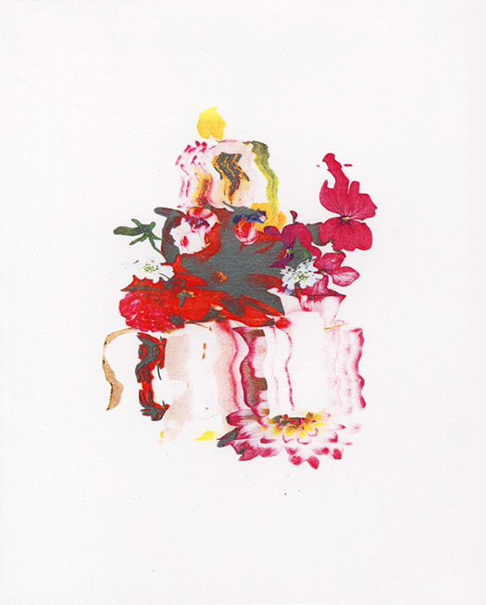

Chloe Scheffe
Graphic design,
etc.
Archive
Disrupt
Screenprints on bristol
12.75 x 15.5" each
2013
A series of screenprints exploring how imposed geometry affects the legibility of organic form.
Printed in CMYK and silver or white.
